Scenes From American Culture
A jaded gallerist encounters a sequence of American subculture figures inside his gallery. Five actors move through interwoven vignettes built around him, staged to break the frontal arrangement of stage and audience. Actors enter from the street outside and spray-paint the glass windows the audience sits behind. A planted audience member receives phone calls throughout the show, interrupting performers and viewers alike. The performance ends with two actors dressed as police officers ordering the audience out of the gallery and closing the piece by removing them from the room.
Written and directed by the artist. Commissioned by and performed at Pop Gun Art Gallery, New York, August 2023.
extended text
Scenes From American Culture is an anti-art theatrical performance that employs five actors to critique the institution of art galleries, consumerism, and Late Capitalism. The play consists of interwoven absurd vignettes revolving around a jaded art gallerist who encounters characters from various American subcultures at his gallery.
As an anti-theatrical experiment, Scenes From American Culture challenges traditional theatrical conventions by bifurcating spatial unity and deconstructing the idea of the frontal spectacle or stage. The performance achieves this by featuring simultaneous performance moments that surround and envelop the audience.
In one such moment, actors emerged from the street outside the gallery and began spray-painting the transparent glass windows behind which the audience sat and saw the frontal performance. Another moment involved a planted actor sitting in the audience who continuously received phone calls during the show, disrupting the experience of the audience and other performers alike. Lastly, the show ended with two actors dressed as police officers assertively requesting the audience to leave due to a noise complaint, and eventually kicked out the audience.
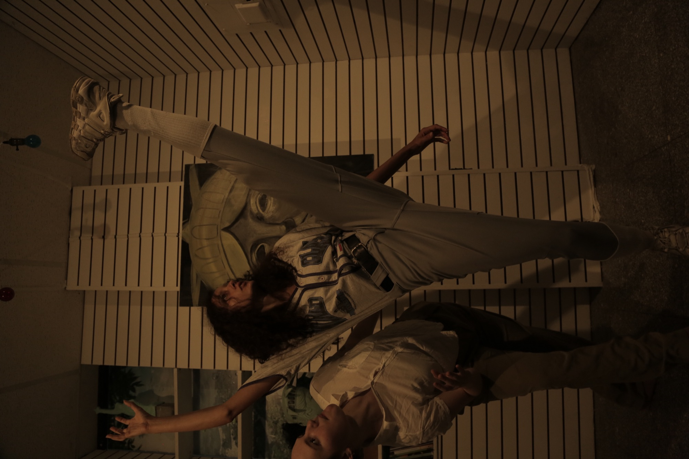
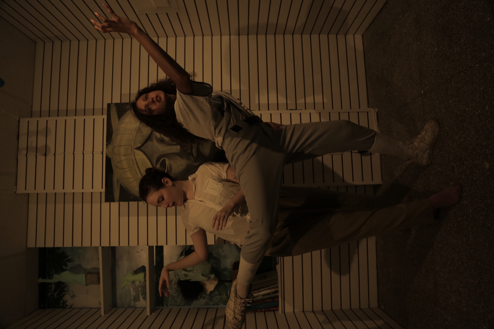
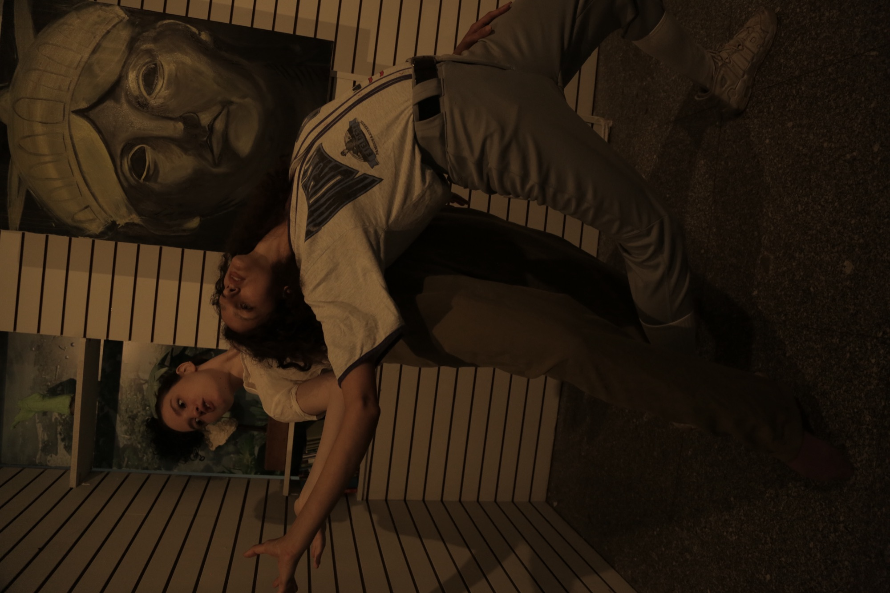
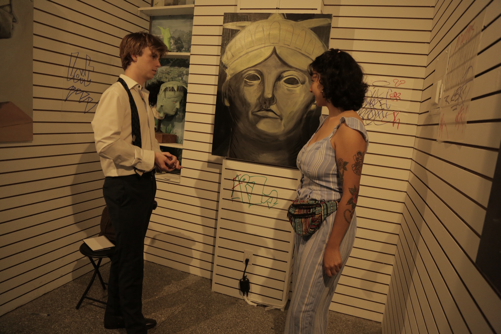
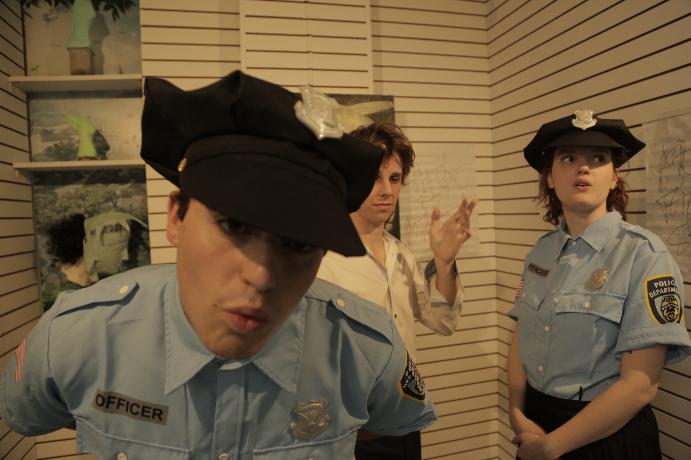
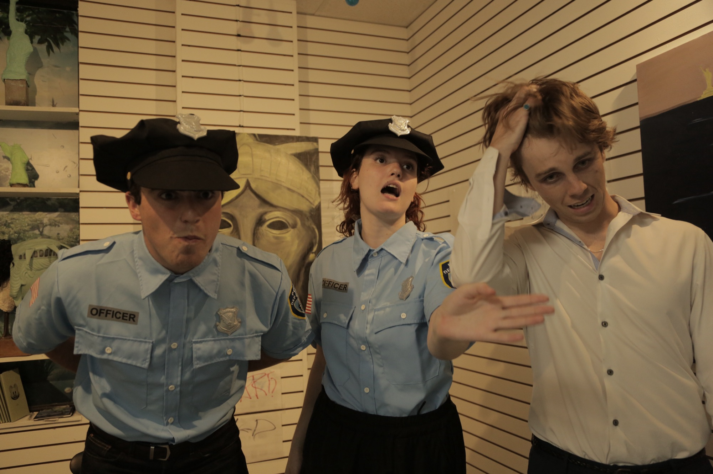
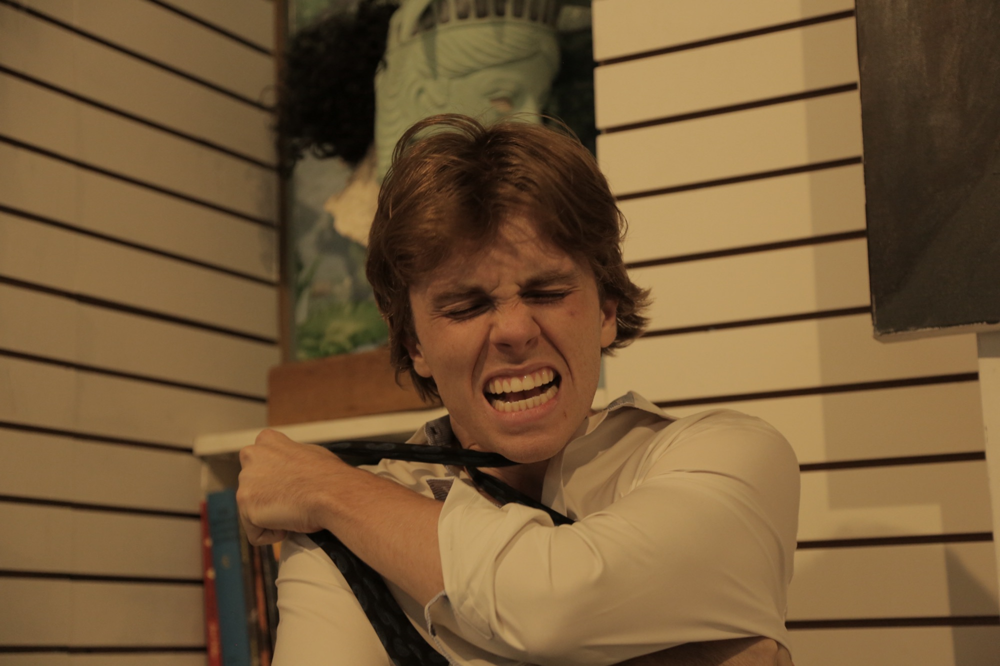
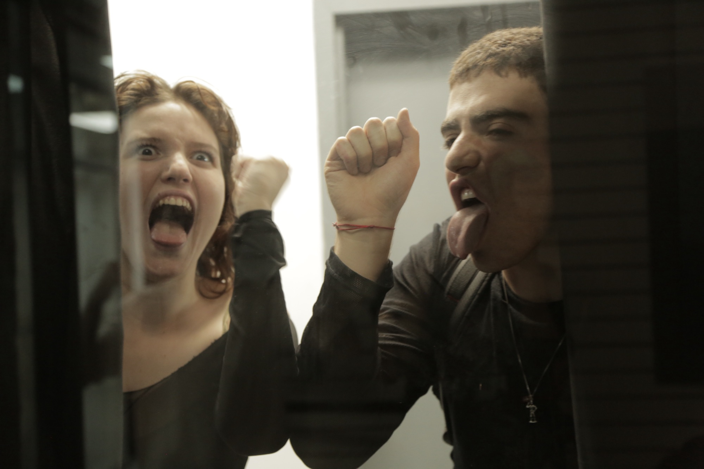
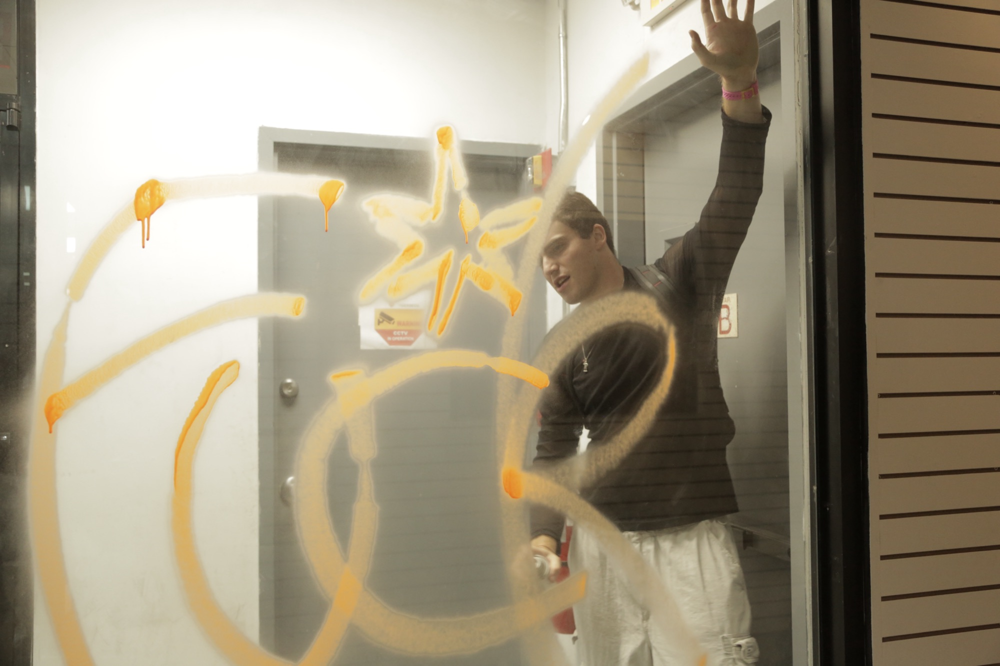
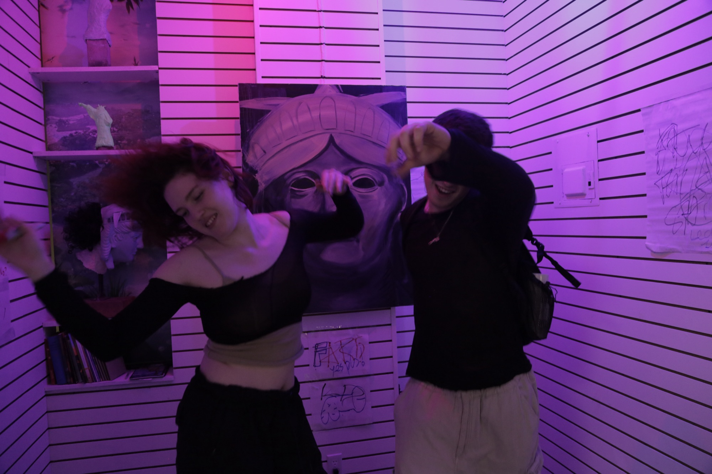
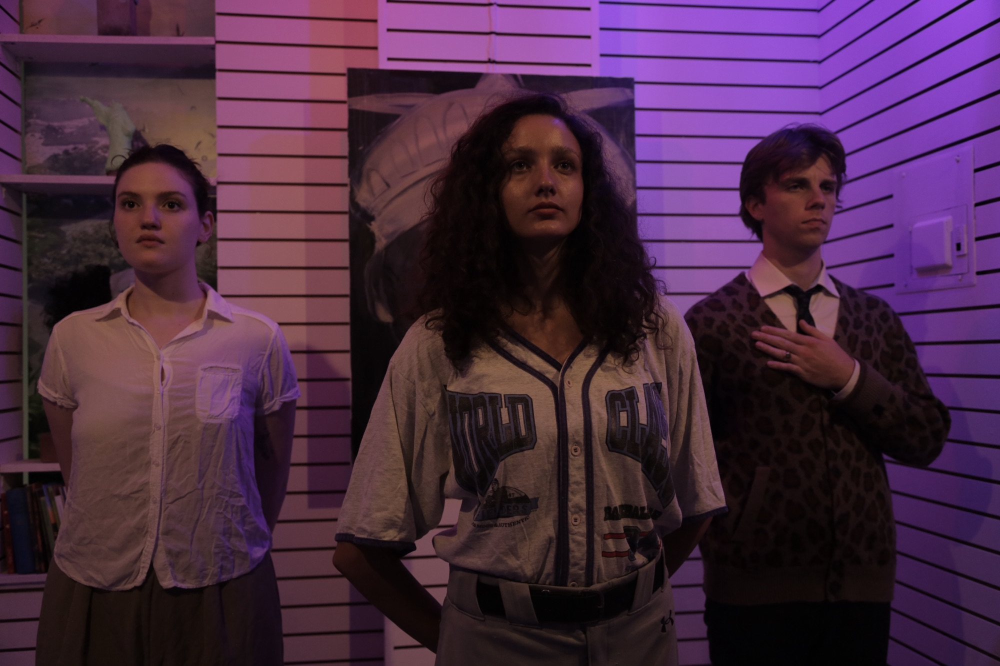